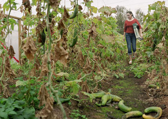

|
| ISSUE #2 |
|
Location and Actuality  Foreground Study, Cucumber Greenhouse, 2000, detail
Colour photograph, 61cm X 111.7cm, Christos Dikeakos Christos Dikeakos - interview Gary Pearson: Christos Dikeakos: The shot was produced on a panoramic camera, a Noblex medium format. The style accentuates a foreground and background division of visual relationships, a dichotomy, perhaps a contradiction between messy, untidy, provisional foregrounds and stable landscape backgrounds. I used this technique throughout this period and also shot a number of pictures in various urban locations in Vancouver and around Europe. In this case the messy is what borders the property boundaries or the unfarmed part of the farm where the detritus is tossed out, wood piled up, where things and implements are abandoned and forgotten. The cardboard boxes folded, piled and curved is a fake natural topographical landscape—a sham. The messy and untidy iconography is the subaltern of a photo obsession for many generations of Vancouver photographers starting with Fred Herzog in the 60’s. It may denote shifting power relations as evidenced by the subject matter in the picture. Here the old weathered cardboard box pile splits the picture frame as oppositional to the near and background distance of the picture, in which a young and ordered orchard seems to flourish. Farther in the background are the Ice Age-carved, low rolling mountains, with the sage and pine trees of the south Okanagan region. The focus is on natural landscape with the emphasis on the human-occupied landscape. The natural wilderness is distanced. It’s still a lyrical and beautiful subject but my focus in this picture at the time was to produce a number of perspectives on how people still live off the land, and the agro-economic changes that were occurring then, and are still occurring. In an unconscious way, I chose this picture from many other pictures of this amazingly well-run 20-acre farm. The farmer grew exceptional produce only to see half of it re-ploughed at the end of the harvest season. The iconography suggests that small-lot farming does not pay. That it’s a business in decline. My question was: How can one make a living off the land? Now that the vineyard gold rush and wine and agro-tourism have set in, perhaps that same farmer may turn into a vintner and find a new way to make a living. As you can see, the picture is driven by subject matter and the detailing and localizing of a place. What should be noticed and needs to be articulated in this case are the edge and boundary areas. Many pictures like this seem to go off assignment, especially in such a dramatic and unique place like the southern Okanagan. The boxes are a weathered pile of lifeless brown containers with local origins like BC Fruit to the big industrial cartels like the United Fruit Company which almost owned pre-Castro Cuba.
|
This is an excerpt of the full article. To view complete text, please subscribe . You may also purchase a back issue |
Lake publishes fiction, poetry, critical essays, interviews, reviews and visual arts related to the environment.
|
Lake - Journal of Arts and Environment
Faculty of Creative and Critical Studies at the University of British Columbia Okanagan |
| web design by Idea Bureau |